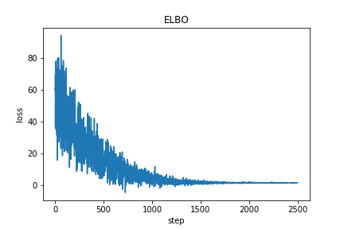

Note: This blog post is still a rough draft. Read on with caution.
A lot of machine learning that we do is probabilistic, even though we don’t phrase it as such. Indeed, one can think of regularized linear regression as a hierarchical Bayesian model where the outcomes are normally-distributed with a fixed (yet unknown) variance. More often than not, thinking in terms of the probabilistic perspective leads us to generalizations of our favorite algorithms. As a trite example, if we wanted a robust version of the above regression, we might replace our normal distribution with a distribution with heavier tails, such as the Student \(t\)-distribution.
However most of the time, we ignore this probabilistic bounty and resort to maximal likelihood techniques (or if we end up being fancy, MAP!). By resorting to averages we throw away a huge amount of relevant information, and drive us away from principled optimality. Fully exploiting this leads us to the Bayesian framework, which is characterized by computational complexity and inferential madness. Is there a way to just write models and have the hard computations done for you automatically?
probabilistic programming
Enter probabilistic programming. PPLs have for years been promising data scientists a beautiful story– write your models, press a button, and off you go! There have been bumps along the way. Early probabilistic programming languages were like early tensorflow: models were constructed in an embedded DSL with huge limitations as to what you could do, since each new control flow feature had to be implemented in the confines of the language. Take for instance a generative story for a geometric distribution \(x\sim\text{Geom}(p)\),
def geometric(p):
b = flip(p) # bernoulli with param p
if bool(b):
return 1
else:
return 1 + geometric(p)This simple distribution has very complicated control flow! Inference on this model requires traversing computational graphs of variable size, so we need PPLs that can deal with this and other kinds of control flow in a natural way.
I’ve been an advocate of the control flow implemented via algebraic effects systems, where computations are given effectful emissions, which are captured and handled by outside effect handlers. While many (functional) languages deal with computational effects by passing them around in monadic types, algebraic effect languages use bounding-constructs like delimited continuations to restrict the scope of effects.
It turns out this strategy can have a lot of mileage, as it is the main idea behind the construction of Uber’s probabilistic programming language Pyro. While the full strength of delimited continuations is difficult to replicate in Python, one-shot continuations are easier to implement by passing global state around. To see examples of full delimited continuations, I have some blog posts dedicated to it.
minipyro, annotated
In this post I want to try and walk through the implementation of Pyro, starting with its main effects system. This is basically an annotated form of minipyro. I think it is an interesting case study in how future PPLs can be build in general-purpose languages, and understanding how Pyro works under the hood is a great way to think about its limitations, and how to potentially get around it (for example, combining with distributed training in pytorch is tricky, but not impossible).
import weakref
from collections import OrderedDict
import torchpyro is a probabilistic programming language, and as such are built with random variables and distributions as primitive objects. To perform inference on data, distributions expose an API of two functions– sample and log_prob.
Simply, sample samples a tensor from the given distribution, and log_prob returns the log-probability of a tensor computed from the pdf or pmf of the distribution. This, along with gradients of the log-probability (which is why pyro is built with the auto-diff properties of pytorch) is enough to allow for the sampling of the posterior distribution from probabilistic models, which is what automated inference is designed for.
However, we want our inference to run automatically in the background, without the need for us to write them ourselves. This is fairly easy if all we are doing is running, say, MCMC. We run our model repeatedly, sampling from each distribution and computing log-probabilities, taking gradients and running acceptance protocols. This can be done with a giant for loop. So why does pyro make it so complicated with effect handlers?
Well, its because we often want to remember the entire trace of a probabilistic program. For example, suppose we have a model and want to understand what happens when we condition on a parameter taking on a certain value? We can use a giant loop with rejection sampling semantics, but we’re gonna be running this for a long time before any convergence can occur. A better idea is to start in the middle and rerun simulations from the middle of a sampling process. To do this in the background, we need to keep these effects hidden from us, using effect handlers.
First things first, we need to keep track of our two kinds of global state: effect handlers and named parameters
PYRO_STACK = []
PARAM_STORE = {} # maps name -> (unconstrained_value, constraint)
def get_param_store():
return PARAM_STOREpyro uses the Messenger class as the main abstraction of an effect handler. Okay, what the heck is an effect? a computational effect can be thought of as any unpure artifact of a computation. Intuitively, we can try and pretend python is a functional programming language and an effects system is something that is “building something in the background” as a computation is executed, e.g. building a computational graph or recording the sample/log-probs as a probabilistic model is evaluated.
To capture the idea of a computation entering an “effectful environment” we use python context managers. Such handlers record all the effects being emitted during a computation and handle them. Multiple effect handlers can wrap a single computation, and effects emitted are bubbled up through the handlers sequentially until they are captured by a relevant one.
class Messenger:
def __init__(self, fn=None):
# effect handlers wrap a computation, here described as a function
self.fn = fn
def __enter__(self):
# make the environment aware of the handler's existence
PYRO_STACK.append(self)
def __exit__(self, *args, **kwargs):
# exiting a handler removes it from the stack
assert PYRO_STACK[-1] is self
PYRO_STACK.pop()
# these will be explained later...
def process_message(self, msg):
pass
def postprocess_message(self, msg):
pass
def __call__(self, *args, **kwargs):
# when a function is wrapped with an effect handler, every time it is called, we
# now allow it to emit effects to be captured by running it in the context of the
# effect handler
with self:
return self.fn(*args, **kwargs)The comments above are explanatory. an example of an effect handler (again, we think of it as “effectful augmentation of computations”) is given by trace. In a nutshell, trace records the inputs and outputs of a function and keeps that information around with other metadata.
class trace(Messenger):
def __enter__(self):
super(trace, self).__enter__()
# augmented data is recorded as a python dict
self.trace = OrderedDict()
return self.trace
"""trace is intended to be the 'outer' effect handler in the stack,
and will record the value after all other effects have been applied. in
this sense, trace is our main bookkeeping device in our stochastic graphs"""
def postprocess_message(self, msg):
assert msg["type"] != "sample" or msg["name"] not in self.trace, \
"sample sites must have unique names"
self.trace[msg["name"]] = msg.copy()
def get_trace(self, *args, **kwargs):
# runs the underlying computation and returns the recorded trace
self(*args, **kwargs)
return self.traceWhat is msg in the above? It’s our effect. In pyro’s implementation, effects are reified as messages (dicts) being passed around the context managers, which are processed/post-processed.
Before we see more handlers, let’s implement the running of an effectful computation and elucidate how messages are passed around.
def apply_stack(msg):
"""applies the effect handler stack to an effectful computation
the scheme is as follows: something like pyro.sample or pyro.param
initializes a msg (an effect) which is then passed through each
handler in the stack.
"""
for i, handler in enumerate(reversed(PYRO_STACK)):
# process message
handler.process_message(msg)
# a stop message prematurely stops propagation
if msg.get("stop"):
break
# perform the (uneffectful) computation
if msg["value"] is None:
msg["value"] = msg["fn"](*msg["args"])
# postprocess message through handlers in reverse order,
# keeping in mind that we might have stopped prematurely
for handler in PYRO_STACK[-i-1:]:
handler.postprocess_message(msg)
return msgSo far, this is the core of the effect handling system in pyro! To see an example of this, let’s start with the core function of a probabilistic programming system: sampling from models. Given a distribution d, calling d.sample() is a uneffectful computation (ignoring randomness)– to make it emit an “effect message”, we wrap all primitive distributions in a pyro.sample handler to allow samples to have this effectful structure.
note: This is not a Messenger! pyro.sample is intended as an effect emitter– it should by itself never handle any effects itself.
def sample(name, fn, *args, **kwargs):
# if this site is observable (i.e. a place to be conditioned by data), we
# mark that directly
obs = kwargs.pop("obs", None)
# if there are no active Messengers, we just draw a sample and return it as expected
if not PYRO_STACK:
return fn(*args, **kwargs)
# else, an effect (msg) is initialized
effect_msg = {
"type": "sample",
"name": name, # sampling sites are given unique names
"fn": fn,
"args": args,
"kwargs": kwargs,
"value": obs}
# pass it through the effect handlers
processed_effect_msg = apply_stack(effect_msg)
return processed_effect_msg["value"]To keep things straight in our heads, let’s run through a basic example.
import pyro.distributions as dist
sample("test", dist.Normal(loc=0, scale=1))
> tensor(0.0009)# a simple probabilistic model is merely a generative data story
def simple_model():
switch = sample("test_bool", dist.Bernoulli(0.5))
if switch:
a = sample("test_a", dist.Normal(loc=0, scale=1))
else:
b = sample("test_b", dist.Normal(loc=1, scale=0.5))
a = sample("test_a", dist.Normal(loc=b, scale=1))
return a
sample_trace = trace(simple_model).get_trace()
sample_trace
> OrderedDict([('test_bool',
> {'type': 'sample',
> 'name': 'test_bool',
> 'fn': Bernoulli(probs: 0.5),
> 'args': (),
> 'kwargs': {},
> 'value': tensor(1.)}),
> ('test_a',
> {'type': 'sample',
> 'name': 'test_a',
> 'fn': Normal(loc: 0.0, scale: 1.0),
> 'args': (),
> 'kwargs': {},
> 'value': tensor(1.0179)})])This is a single trace of the probabilistic model simple_model above.
Now that we can capture sample traces from a model, what can we do with it? We can use it to answer probabilistic queries like, what is the joint probability of the sample? This can be given by summing up the log-probabilities of each sample from the sites and exponentiating it.
def log_prob_sum(tr):
log_p_sum = 0
for site_name, site_msg in tr.items():
log_prob = site_msg["fn"].log_prob(site_msg["value"])
log_p_sum += log_prob
return log_p_sum
log_prob_sum(sample_trace).exp()
> tensor(0.1188)Let’s bump the complexity of our probabilistic models up a bit. Recall that plate notation is a method of representing variables that repeat in a graphical model. For example, we might wish to model N normally distributed data points where the mean is itself normally-distributed:
\[ x_i \sim \text{Normal}(\alpha, 1) \text{ for }i=1,...,N \] \[ \alpha \sim \text{Normal}(0, 1) \]
To represent this without loops, we treat it as an effect handler.
class plate(Messenger):
def __init__(self, name, size, dim=None):
if dim is None:
raise NotImplementedError("plate requires a dim arg")
# in this plate, we only implement broadcasting semantics
assert dim < 0
self.size = size
self.dim = dim
super(plate, self).__init__(fn=None)
def process_message(self, msg):
# plates must wrap over pyro.sample
if msg["type"] == "sample":
# trivially expand batch_shape of underlying distribution
batch_shape = msg["fn"].batch_shape
if len(batch_shape) < -self.dim or batch_shape[self.dim] != self.size:
batch_shape = [1] * (-self.dim - len(batch_shape)) + list(batch_shape)
batch_shape[self.dim] = self.size
msg["fn"] = msg["fn"].expand(torch.Size(batch_shape))
def __iter__(self):
return range(self.size)Now the model above is given by
def model(N):
a = sample("alpha", dist.Normal(0, 1))
with plate("data", N, dim=-1):
sample("obs", dist.Normal(a, 1))
N = 6
trace(model).get_trace(N)
> OrderedDict([('alpha',
> {'type': 'sample',
> 'name': 'alpha',
> 'fn': Normal(loc: 0.0, scale: 1.0),
> 'args': (),
> 'kwargs': {},
> 'value': tensor(0.4854)}),
> ('obs',
> {'type': 'sample',
> 'name': 'obs',
> 'fn': Normal(loc: torch.Size([6]), scale: torch.Size([6])),
> 'args': (),
> 'kwargs': {},
> 'value': tensor([ 0.0110, 2.6059, -0.6557, 1.2493, 1.0139, 2.2700])})])We see that without writing a loop, we sample N observations from the above distribution via pure broadcasting semantics.
inference
Now that we have a hang of the basic objects in pyro, we now want to formulate the entire reason for probabilistic programming– automatic Bayesian inference. What is inference? It is the effective manipulation of our generative models to produce estimates over latent variables in our model.
The basic ingredients we need for inference in pyro are conditioning and good inference algorithms; in our case, it is given by stochastic variational inference. We start with condition.
condition is an effect handler that effectively allows us to hold certain sampling sites at fixed values. Implementing this is easy– we postprocess any message that is emitted by a pyro.sample site by swapping out whatever was sampled by our fixed value.
class condition(Messenger):
def __init__(self, fn, data=None):
super(condition, self).__init__(fn)
self.data = data
def process_message(self, msg):
if self.data is None:
return msg
# if sample site name is in data, replace sampled value by
# fixed conditional value
if msg["name"] in self.data:
if isinstance(self.data[msg["name"]], torch.Tensor):
msg["value"] = self.data[msg["name"]]
else:
msg["value"] = torch.tensor(self.data[msg["name"]])
return msgWe’ll test that it works by using it to compute the log-joint probabilities of a toy model from the pyro documentation.
def scale(guess):
weight = sample("weight", dist.Normal(guess, 1))
return sample("measurement", dist.Normal(weight, 0.75))
def make_log_joint(model):
def _log_joint(cond_data, *args, **kwargs):
conditioned_model = condition(model, data=cond_data)
sample_trace = trace(conditioned_model).get_trace(*args, **kwargs)
return log_prob_sum(sample_trace)
return _log_joint
scale_log_joint = make_log_joint(scale)
scale_log_joint({"measurement": 9.5, "weight": 8.23}, 8.5)
> tensor(-3.0203)Often what we want to do is estimate the latent variables in a generative model that best estimates the observational data the model is conditioned on. However, the sample statements in our models are immobile and our inference algorithms won’t operate on them. Instead, we need to represent latent variables by parameters.
def param(name, init_value=None, constraint=torch.distributions.constraints.real, event_dim=None):
if event_dim is not None:
raise NotImplementedError("plate does not support the event_dim arg")
# a parameter needs to be optimized in an unconstrained space, while the underlying
# parameter itself could be very constrained. we need a function that brokers the
# passage between the two spaces
def fn(init_value, constraint):
# remember, PARAM_STORE maps name -> (unconstrained_value, constraint)
if name in PARAM_STORE:
unconstrained_value, constraint = PARAM_STORE[name]
else:
# initialize with a constrained value
assert init_value is not None
with torch.no_grad():
constrained_value = init_value.detach()
unconstrained_value = torch.distributions.transform_to(constraint).inv(constrained_value)
# as the unconstrained parameter needs to be optimized, make sure
# gradients can propagate through node
unconstrained_value.requires_grad_()
PARAM_STORE[name] = (unconstrained_value, constraint)
# transform from unconstrained space to constrained space.
constrained_value = torch.distributions.transform_to(constraint)(unconstrained_value)
constrained_value.unconstrained = weakref.ref(unconstrained_value)
return constrained_value
# if there are no active Messengers, we just draw a sample and return it as expected
if not PYRO_STACK:
return fn(init_value, constraint)
# else, an effect (msg) is initialized
effect_msg = {
"type": "param",
"name": name, # parameter sites are given unique names
"fn": fn,
"args": (init_value, constraint),
"value": None}
# pass it through the effect handlers
processed_effect_msg = apply_stack(effect_msg)
return processed_effect_msg["value"]The complexity of param is only from the fact that 1) we need to be able to impose optimizable constraints on our parameters, and 2) we need to be able to apply autodifferentiation to optimize said parameters.
Now all we need is an inference algorithm. The hallmark of pyro is its usage of stochastic variational inference, which can be easily describe as trying to approximate the posterior distribution \(p(\theta|\text{data})\) of our model via a parameterized family of guides \(q(\theta; \text{params})\) where \(\text{params}\) are optimizable params. We do this by finding the parameters that make our guides as close as possible to the posterior, where distance here is given by the Kullback-Leibner divergence
\[ \text{D}_\text{KL}(q(\theta;\text{params})|| p(\theta|\text{data})) \]
For example, in our scale example above, the posterior \(p(\text{weight}|\text{meas}=9.5, \text{guess}=8.5)\) is some univariate distribution. We will try and approximate it with the family of normal distributions \(q(\text{weight}|a, b)\):
def scale_guide(guess):
a = param("a", torch.tensor(guess))
b = param("b", torch.tensor(1.0), constraint=torch.distributions.constraints.positive)
return sample("weight", dist.Normal(a, b))trace(scale_guide).get_trace(3.0)
> OrderedDict([('a',
> {'type': 'param',
> 'name': 'a',
> 'fn': <function __main__.param.<locals>.fn(init_value, constraint)>,
> 'args': (tensor(3.), Real()),
> 'value': tensor(3., requires_grad=True)}),
> ('b',
> {'type': 'param',
> 'name': 'b',
> 'fn': <function __main__.param.<locals>.fn(init_value, constraint)>,
> 'args': (tensor(1.), GreaterThan(lower_bound=0.0)),
> 'value': tensor(1., grad_fn=<AddBackward0>)}),
> ('weight',
> {'type': 'sample',
> 'name': 'weight',
> 'fn': Normal(loc: 3.0, scale: 1.0),
> 'args': (),
> 'kwargs': {},
> 'value': tensor(1.0948, grad_fn=<AddBackward0>)})])This is our guide \(q(\theta|\text{params})\). Our goal is to find the parameter that minimizes the KL-divergence (also known as the \(\text{ELBO}\) (evidence lower bound)):
\[ \text{D}_\text{KL}(q(\theta;\text{params})|| p(\theta|\text{data})) = \mathbf{E}_{\theta\sim q(\theta;\text{params})}[\log{q(\theta;\text{params})} - \log{p(\theta|\text{data})}] \]
This will be computed using a 1-sample monte-carlo estimator of the \(\text{ELBO}\), which we call Trace_ELBO. There is one technical point to be made here– once we sample a trace from our guide \(q(\theta;\text{params})\), we must use the exact same trace to compute the log-probabilities for both \(q\) and \(p\). In essence, we need to “replay” the trace for the model underlying \(p(\theta|\text{data})\) and use those values to compute the log-probability. This can be seen by the expectation above– a monte-carlo estimate of this expectation samples \(theta\) from \(q(\theta;\text{params})\) and then uses these same \(\theta\) in the log-probs.
This replay is itself an effect handler– intuitively during a replay, any sample effect msg emitted by the model is intercepted and has its value replaced by the trace its replaying.
class replay(Messenger):
def __init__(self, fn, guide_trace):
self.guide_trace = guide_trace
super(replay, self).__init__(fn)
def process_message(self, msg):
if msg["name"] in self.guide_trace:
# replaces model sampled value with value in guide trace
msg["value"] = self.guide_trace[msg["name"]]["value"]Now we use this to compute the \(\text{ELBO}\) via Monte Carlo:
def elbo(model, guide, *args, **kwargs):
# sample from the guide to get a trace of params/samples
guide_trace = trace(guide).get_trace(*args, **kwargs)
# replay the guide trace on the model to get a trace of model
model_trace = trace(replay(model, guide_trace)).get_trace(*args, **kwargs)
elbo = 0
# go through trace, adding up log probabilities
for site in model_trace.values():
if site["type"] == "sample":
elbo = elbo - site["fn"].log_prob(site["value"]).sum()
for site in guide_trace.values():
if site["type"] == "sample":
elbo = elbo + site["fn"].log_prob(site["value"]).sum()
return elbo
def Trace_ELBO():
return elboFinally, we can wrap up the training loop for our inference algorithm into a stochastic variational inference class! Since we are interested in optimizing the param tensors in our algorithm, we need a way to isolate the param messages from sample statements in our model. We do this by a separate trace of our model that “blocks” out the sample statements. as you guessed it, it is another effect handler– block:
class block(Messenger):
def __init__(self, fn=None, hide_fn=lambda msg: True):
self.hide_fn = hide_fn
super().__init__(fn)
def process_message(self, msg):
# the hide_fn is a bool-valued function that checks if the message
# is not allowed to propagate further
if self.hide_fn(msg):
msg["stop"] = TrueAll of our effect handlers cumulate in our SVI class:
class SVI:
def __init__(self, model, guide, optim, loss):
self.model = model
self.guide = guide
self.optim = optim
self.loss = loss
def step(self, *args, **kwargs):
"""performs a single step of optimization"""
# trace only the param messages emitted by our guide
with trace() as param_capture:
with block(hide_fn=lambda msg: msg["type"] == "sample"):
loss = self.loss(self.model, self.guide, *args, **kwargs)
# take gradients and propagate
loss.backward()
# extract parameters from the trace
params = [param_site["value"].unconstrained()
for param_site in param_capture.values()]
self.optim(params)
# manually perform zero_grad
for param in params:
param.grad = torch.zeros_like(param)
return loss.item()Here, torch optimizers should be wrapped as parameters can be dynamically created during the training process.
class Adam:
def __init__(self, optim_args):
self.optim_args = optim_args
# each parameter will get its own optimizer, which we keep track
# of using this dictionary keyed on parameters.
self.optim_objs = {}
def __call__(self, params):
for param in params:
# If we've seen this parameter before, use the previously
# constructed optimizer.
if param in self.optim_objs:
optim = self.optim_objs[param]
# If we've never seen this parameter before, construct
# an Adam optimizer and keep track of it.
else:
optim = torch.optim.Adam([param], **self.optim_args)
self.optim_objs[param] = optim
# Take a gradient step for the parameter param.
optim.step()Let’s test this out on our scale model!
from tqdm import tqdm
import matplotlib.pyplot as plt
n_epochs = 2500
optim = Adam({"lr": 0.007, "betas": (0.90, 0.999)})
# condition scale model on conditioned values
conditioned_values = {"measurement": 9.5}
conditioned_model = condition(scale, conditioned_values)
svi = SVI(model=conditioned_model,
guide=scale_guide,
optim=optim,
loss=Trace_ELBO())
guess = 8.5
# run variational inference
losses = []
for _ in tqdm(range(n_epochs)):
loss = svi.step(guess)
losses.append(loss)Plotting the loss gives

Now we can extract the posterior parameter values inferred by our variational inference procedure.
# extract posterior parameter values
print("a = {}".format(PARAM_STORE["a"][0].item()))
> a = 9.12030029296875
print("b = {}".format(torch.abs(PARAM_STORE["b"][0]).item()))
> b = 0.49517199397087097This is close to what can be inferred analytically for this problem!
As we see, flexible algebraic effect systems allow us to build complicated inference algorithms without thinking too much about the emitted effects. For example, with multi-shot delimited effects we can build inference algorithms that allow us to fully enumerate over discrete latent variables. This is the idea behind the construction of pyro.poutine.queue.
mcmc
Note: Write this section at some point when I have time.